エラー処理¶
Archivematicaでは、処理中にさまざまな種類のエラーが発生することを想定しています。その中には、処理が停止され、転送やSIPがファイルブラウザの失敗したディレクトリに移動されるものもあります。例えば、正規化の失敗が報告され、ユーザーにSIPの処理を続行する機会が与えられます。
ここやユーザーマニュアルに答えが見つからない場合は、 Archivematicaユーザーフォーラム を検索してみてください。以前にも同じ問題が発生し、解決策を提示された方がいらっしゃるかもしれません。そこで答えが見つからない場合は、お気軽にご質問ください。リストへの質問には、エラーに関するできるだけ多くの情報を含めるのがベストです。つまり、使用しているシステム、転送の内容、タスク情報（エラーが発生したマイクロサービスのジョブと同じ行の歯車のアイコンをクリック）、show arguments dataの出力をコピーしてください。同じエラーのタスク情報と引数表示データは以下を参照してください。
このページでは：
ダッシュボードのエラーレポート¶
マイクロサービスに障害が発生したり、エラーが発生した場合、ワークフローは停止し、Archivematicaは「転送に失敗しました」と報告します。マイクロサービスのドロップダウンを展開すると、失敗した特定のタスクを表示できます。
{kind=link}
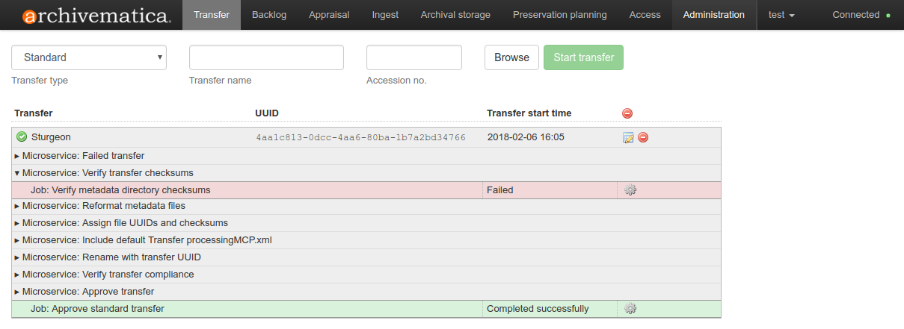
転送チェックサムの妥当性確認マイクロサービスで転送が失敗したことを示すダッシュボード¶
転送が失敗したディレクトリに移動し、処理が停止したことに注意してください。
{kind=link}
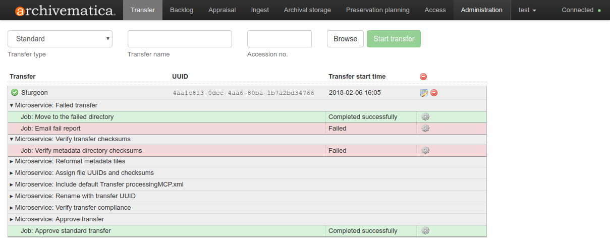
「転送の失敗」についての詳細¶
タスクアイコン（右側の歯車アイコン）をクリックして、エラーレポートを開きます：
{kind=link}
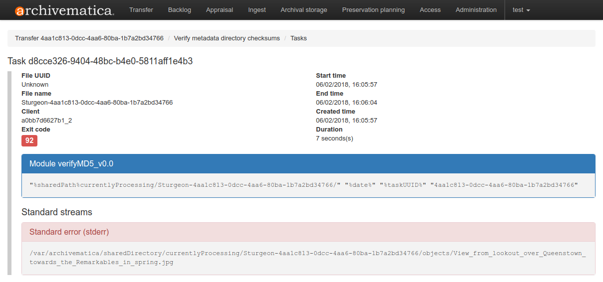
ファイルがチェックサム妥当性確認に失敗したことを示すエラーレポート¶
これらのレポートは、一般的に標準的であり、特定の種類のエラーについて予測可能であり、トラブルシューティングに役立ちます。失敗したファイルは常にレポートの先頭に表示されることに注意してください。
管理タブの障害レポート¶
障害レポートは、ダッシュボードの管理タブで表示できます。詳細については、 ダッシュボードの管理タブ-障害 を参照してください。
メールエラーレポート¶
Archivematicaは、2種類の障害に対してEメールレポートを送信します：
正規化レポートは、正規化プロセスで少なくとも1つのエラーが発生した場合に送信されます。
ワークフローが予期せず失敗した場合、失敗レポートが送信されます。
{kind=link}
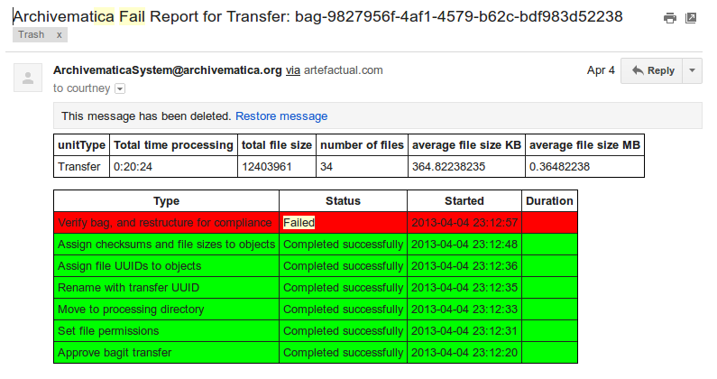
Verify Bagマイクロサービスでのエラーを示す電子メールで送信された障害レポート¶
電子メールは、処理を停止しないエラーが発生した場合ではなく、転送またはインジェストを完了できない場合に生成されます。追加の設定を行わずにエラー電子メールを受信するには、サーバーでメール配信が有効になっている必要があることに注意してください。
電子メールレポートの詳細については、 電子メール通知の設定を参照してください
正規化エラー¶
ダッシュボードは、以下の場合に正規化エラーを報告します：
正規化を試みたが失敗
正規化が試みられず、ファイルが認識された保存フォーマットまたはアクセスフォーマットでありません
正規化が失敗した場合、SIPは、正規化承認ステップに到達するまで処理を継続します。この時点で、ユーザーには2つの選択肢があります：
オプション1
アクションドロップダウンメニューの横にあるレポートアイコンをクリックすると、正規化のサマリーレポートが表示されます：
{kind=link}
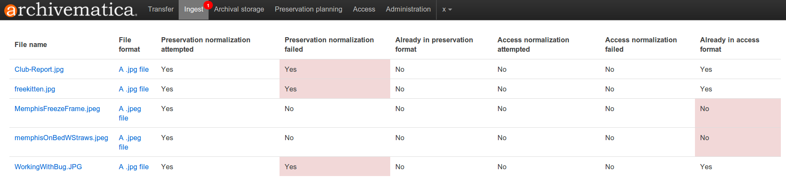
失敗した正規化試行を示す正規化レポート¶
このレポートには、正規化されたもの、すでに保存・アクセス可能なフォーマットになっているもの、正規化に失敗したもの、保存・アクセス可能なフォーマットになっていないものが表示されます。正規化に失敗した場合、"yes"をクリックすると、新しいタブでエラーのタスクレポートを見ることができます：
{kind=link}
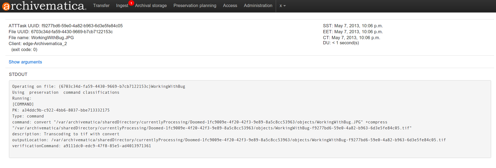
失敗した正規化ジョブのタスク出力¶
オプション2
マイクロサービスの横にある括弧内のレビューをクリックして、新しいブラウザータブのディレクトリ構造で正規化の結果を表示します：
{kind=link}
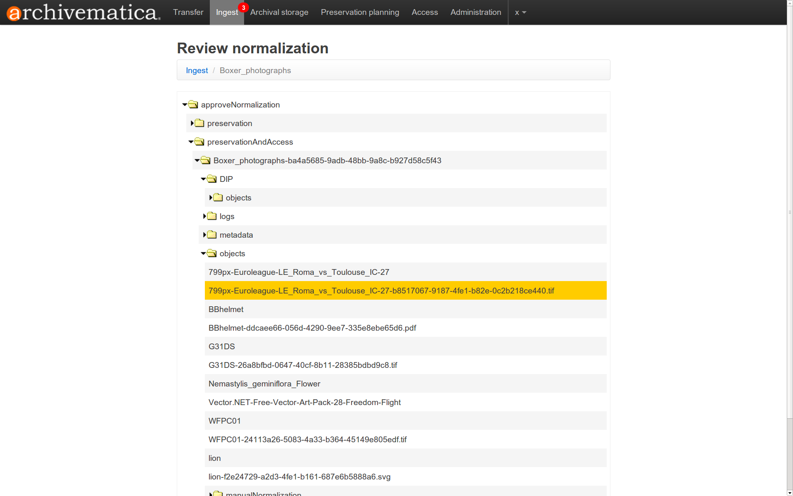
新しいタブで正規化結果を確認¶
このレビューにより、ユーザーは、適切なプラグインがある場合にブラウザーでオブジェクトを開くことも、オブジェクトをダウンロードしてローカルアプリケーションを使用して開くこともできます。
ユーザーは、正規化エラーがあってもSIPの処理を続行することを選択できます。
ユーザーは、正規化をやり直すこともできます。例えば、FITS-JHOVEの結果に基づいて正規化を行い、失敗が発生した場合、ユーザーは正規化をやり直し、代わりにFITS-DROIDの結果に基づいて正規化を行うことを選択できます。
{kind=link}
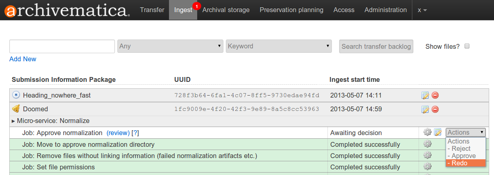
正規化ジョブの承認のドロップダウンメニューの正規化をやり直すオプション¶
Archivematicaは、正規化エラーが発生すると email にメールを送信します。Eメールに記載される情報：
パイプラインのUUID SIPの名前とUUIDファイル名とファイルUUID、および
保存またはアクセスの正規化に失敗したかどうかの終了コード
終了コード1は、正規化ルールとコマンドは存在するが、正しく実行できなかったことを示します（コマンドの問題、ファイルの問題など）。終了コード2は、そのフォーマット用の正規化ルール/コマンドが存在しないことを示します。
{kind=link}
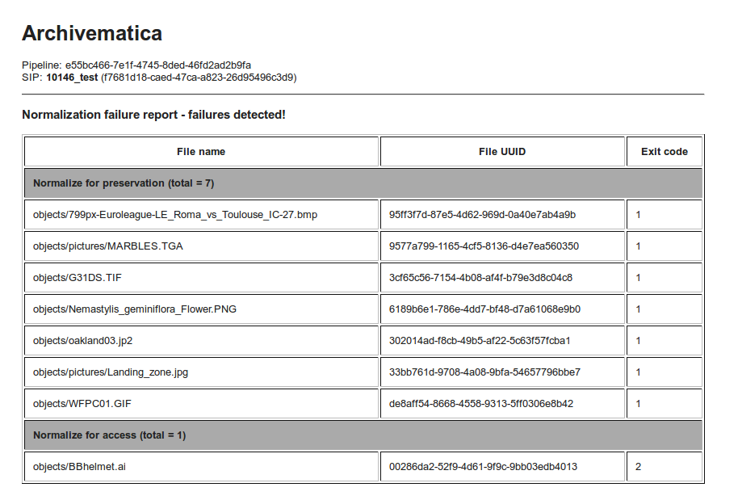
正規化エラーレポートをメールで送信¶
DIPアップロードエラー¶
パーマリンクの入力を間違えた場合、Archivematicaは引き続きDIPのアップロードを試みます：
{kind=link}
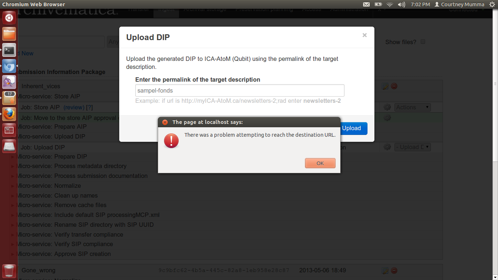
パーマリンクが正しくないという警告が表示され、アップロードを再試行できるDIP¶
転送に失敗するエラー¶
ワークフローを停止させ、Archivematicaが「転送失敗」を報告する原因となるマイクロサービスエラーにはいくつかあります。すべてのマイクロサービスエラーで転送が失敗するわけではないことに注意してください。以下は、「転送失敗」マイクロサービスが実行され、転送が失敗したディレクトリに移動される一般的なエラーのリストです。
ウイルスのスキャン：転送中にウイルスが見つかった場合、マイクロサービスは失敗し、転送は失敗したディレクトリに移動されます。
METS.xml文書の生成：転送タブまたはインジェストタブのいずれかで実行されたときに、このマイクロサービスがMETSファイルの一部の生成に失敗すると、転送またはSIPが失敗します。転送またはSIPは失敗したディレクトリに移動します。エラーログには問題の詳細が表示されるので、さらに調査できます。
転送チェックサムの妥当性確認：メタデータ・ディレクトリのチェックサムが妥当性確認できない場合（ファイルが見つからないか破損している場合など）、このマイクロサービスは失敗し、転送は失敗したディレクトリに移動します。
転送を承認します（zipまたはunzipされたバッグ）：このマイクロサービス内で「verify bag, and restructure for complaince」ジョブが失敗すると、転送は失敗し、失敗したディレクトリに移動されます。これは、バッグが BagIt の仕様に適合していない場合や、コンポーネントの1つが正しくない場合に発生します。
転送のコンプライアンスを妥当性確認します：このマイクロサービス内でジョブが失敗すると、転送も失敗し、失敗ディレクトリに移動します。
その他の一般的なエラー動作¶
以下は、一般的なエラーのリストで、正規化と同様、エラーレポートは作成されますが、転送が失敗することはありません。
メタデータの特性化と抽出：FITS 処理が失敗した場合、マイクロサービスは失敗し、転送は処理を続けます。同様に、JHOVE のように FITS 内のツールに障害が発生した場合、ピンク色のエラーバーが表示されますが、処理は続けられます。
thumbs.dbファイルの削除：Archivematicaがthumbs.dbファイルを削除できない場合、マイクロサービスは失敗し、SIPは処理を続行します。
提出文書を保存フォーマットに正規化します。正規化に失敗した場合、マイクロサービスは失敗し、SIP は処理を継続します。
転送またはSIPの拒否¶
ワークフローの承認ポイントにおいて、ユーザーは、転送、SIP、AIP、またはDIP（情報オブジェクトがワークフローのどこにあるかによる）を拒否することを選択できます。これにより、転送またはSIPはRejectedディレクトリ（ファイルブラウザからアクセス可能）に移動され、すべての処理が停止されます。ただし、転送またはSIPはダッシュボードに表示されます。ダッシュボードから転送またはSIPを削除するには、 ダッシュボードから転送またはSIPを削除する を参照してください。
ダッシュボードから転送またはSIPを削除¶
ダッシュボードから転送またはSIPを削除するには、ダッシュボードの赤い"Remove"アイコンをクリックします：
{kind=link}
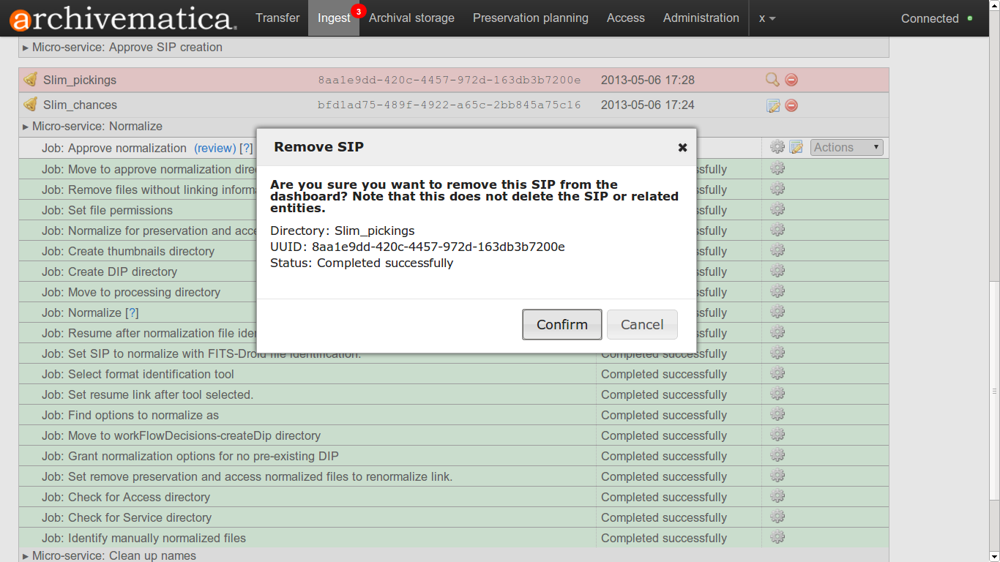
ダッシュボードから転送またはSIPを削除するには、赤い「削除」アイコンをクリックし、「確認」をクリックします。¶
ブラウザのパフォーマンスを向上させるため、定期的にダッシュボードの転送とSIPを消去することをお勧めします。
ブラウザの互換性¶
Archivematicaは、FirefoxとChromeで最も広範囲にテストされています。Internet Explorer 11では、ダッシュボードで転送を開始できない既知の問題があります（issue： 7246 ）。Microsoft Edgeでは、最小限のテストが行われましたが、成功しました。